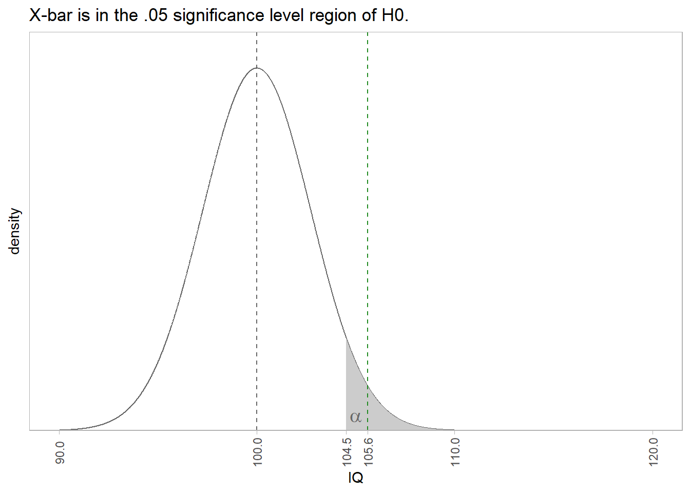
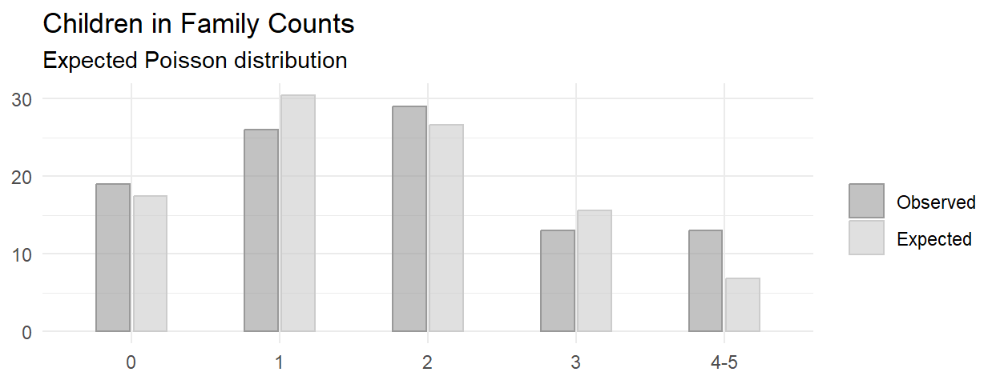
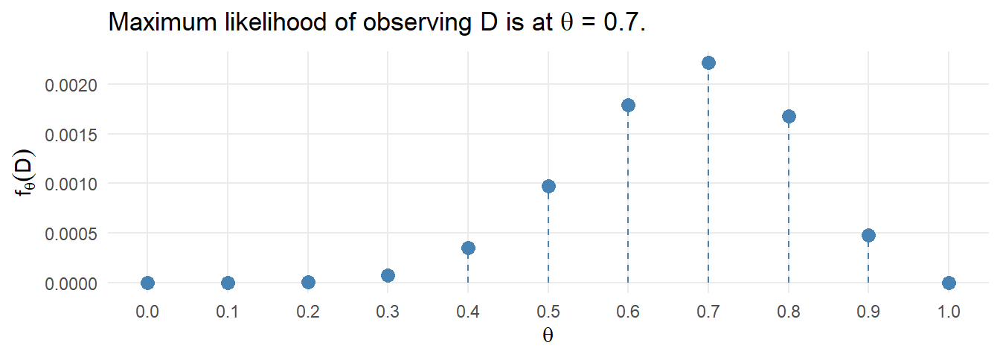
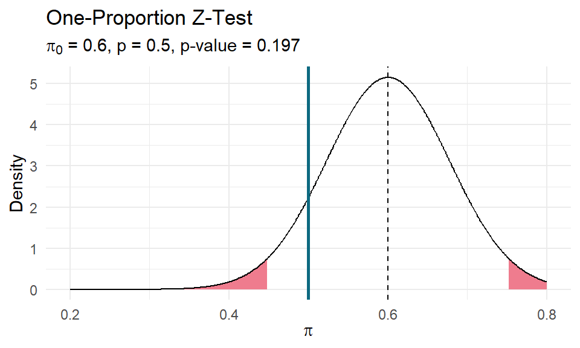

Chapter 1 One-Sample Inference Tests
Use one-sample tests to either describe a single variable’s frequency or central tendency, or to compare the frequency or central tendency to a hypothesized distribution or value.
If the data generating process produces continuous outcomes (interval or ratio), and the outcomes are symmetrically distributed, the sample mean, \(\bar{x}\), is a random variable centered at the population mean, \(\mu\). You can then use a theoretical distribution (normal or student t) to estimate a 95% confidence interval (CI) around \(\mu\), or compare \(\bar{x}\) to an hypothesized population mean, \(\mu_0\). If you (somehow) know the population variance, or the Central Limit Theorem (CLT) conditions hold, you can assume the random variable is normally distributed and use the z-test, otherwise assume the random variable has student t distribution and use the t-test.1 If the data generating process produces continuous outcomes that are not symmetrically distributed, use a non-parametric test like the Wilcoxon median test.
If the data generating process produces discrete outcomes (counts), the sample count, \(x\), is a random variable from a Poisson, binomial, normal, or multinomial distribution, or a random variable from a theoretical outcome.
For counts over a fixed time or space, treat the count as a random variable from a Poisson distribution with expected value \(\lambda\) and variance \(\lambda\).
For counts within a fixed total that are then classified into two levels (usually yes/no), then treat the count as a random variable from a binomial distribution with expected value \(n\pi\) and variance \(n\pi(1-\pi)\).
For binomial distributions where \(n\ge30\) and the frequency counts of both levels is \(\ge\) 5, treat the proportion as a random variable from the normal distribution with expected valued \(\pi\) and variance \(\frac{\pi(1-\pi)}{n}\).
For counts within a fixed total that are then classified into three or more levels, treat the count as a random variable from the multinomial distribution with expected value \(n\pi_j\) and variance \(n\pi_j(1-\pi_j)\).
Whatever the source of the expected values, you use either the chi-squared goodness-of-fit test or G test to test whether the observed values fit the expected values from the distribution. In the special case of binary outcomes with small (n < 1,000), you can use Fisher’s exact test instead. The discrete variable tests are discussed in PSU STATS 504.
1.1 One-Sample Mean z Test
The z test is also called the normal approximation z test. It only applies when the sampling distribution of the population mean is normally distributed with known variance, and there are no significant outliers. The sampling distribution is normally distributed when the underlying population is normally distributed, or when the sample size is large \((n >= 30)\), as follows from the central limit theorem. The t test returns similar results, plus it is valid when the variance is unknown, and that is pretty much always. For that reason, you probably will never use this test.
Under the normal approximation method, the measured mean \(\bar{x}\) approximates the population mean \(\mu\), and the sampling distribution has a normal distribution centered at \(\mu\) with standard error \(se_\mu = \frac{\sigma}{\sqrt{n}}\) where \(\sigma\) is the standard deviation of the underlying population. Define a \((1 - \alpha)\%\) confidence interval as \(\bar{x} \pm z_{(1 - \alpha) {/} 2} se_\mu\), or test \(H_0: \mu = \mu_0\) with test statistic \(Z = \frac{\bar{x} - \mu_0}{se_\mu}\).
Example
The mtcars data set is a sample of n = 32 cars. The mean fuel economy is \(\bar{x} \pm s\) = 20.1 \(\pm\) 6.0 mpg. The prior measured overall fuel economy for vehicles was \(\mu_0 \pm \sigma\) = 18.0 \(\pm\) 6.0 mpg. Has fuel economy improved?
The sample size is \(\ge\) 30, so the sampling distribution of the population mean is normally distributed. The population variance is known, so use the z test.
\(H_0: \mu = 16.0\), and \(H_a: \mu > 16.0\) - a right-tail test. The test statistic is \(Z = \frac{\bar{x} - \mu_0}{se_\mu}=\) 1.97 where \(se_{\mu_0} = \frac{\mu_0}{\sqrt{n}} =\) 1.06. \(P(z > Z) =\) 0.0244, so reject \(H_0\) at the \(\alpha =\) 0.05 level of significance.

The 95% confidence interval for \(\mu\) is \(\bar{x} \pm z_{(1 - \alpha){/}2} se_\mu\) where \(z_{(1 - \alpha){/}2} =\) 1.96. \(\mu =\) 20.09 \(\pm\) 2.08 (95% CI 18.01 to 22.17).

1.2 One-Sample Mean t Test
The one-sample t test applies when the sampling distribution of the population mean is normally distributed and there are no significant outliers. Unlike the z test, the population variance can be unknown. The sampling distribution is normally distributed when the underlying population is normally distributed, or when the sample size is large \((n >= 30)\), as follows from the central limit theorem.
Under the t test method, the measured mean, \(\bar{x}\), approximates the population mean, \(\mu\). The sample standard deviation, \(s\), estimates the unknown population standard deviation, \(\sigma\). The resulting sampling distribution has a t distribution centered at \(\mu\) with standard error \(se_\bar{x} = \frac{s}{\sqrt{n}}\). Define a \((1 - \alpha)\%\) confidence interval as \(\bar{x} \pm t_{(1 - \alpha){/}2} se_\bar{x}\) and/or test \(H_0: \mu = \mu_0\) with test statistic \(T = \frac{\bar{x} - \mu_0}{se_\bar{x}}\).
Example
A researcher recruits a random sample of n = 40 people to participate in a study about depression intervention. The researcher measures the participants’ depression level prior to the study. The mean depression score (3.72 \(\pm\) 0.74) was lower than the population ‘normal’ depression score of 4.0. The null hypothesis is that the sample is representative of the overall population. Should you reject \(H_0\)?
| Characteristic | N = 401 |
|---|---|
| dep_score | 3.72 (0.74) |
|
1
Statistics presented: Mean (SD)
|
|
Conditions
The one-sample t test applies when the variable is continuous and the observations are independent. Additionally, there are two conditions related to the data distribution. If either condition fails, try the suggested work-arounds or use the non-parametric [Wilcoxon 1-Sample Median Test for Numeric Var] instead.
- Outliers. There should be no significant outliers. Outliers exert a large influence on the mean and standard deviation. Test with a box plot. If there are outliers, you might be able to drop them or transform the data.
- Normality. Values should be nearly normally distributed (“nearly” because the t-test is robust to the normality assumption). This condition is especially important with small sample sizes. Test with Q-Q plots or the Shapiro-Wilk test for normality. If the data is very non-normal, you might be able to transform the data.
Outliers
Assess outliers with a box plot. Box plot whiskers extend up to 1.5*IQR from the upper and lower hinges and outliers (beyond the whiskers) are are plotted individually. The boxplot shows no outliers.

If the outliers might are data entry errors or measurement errors, fix them or discard them. If the outliers are genuine, you have a couple options before reverting to Wilcoxon.
- Transform the variable. Don’t do this unless the variable is also non-normal. Transformation also has the downside of making interpretation more difficult.
- Leave it in if it doesn’t affect the conclusion (compared to taking it out).
Normality
Assume the population is normally distributed if n \(\ge\) 30. Otherwise, asses a Q-Q plot, skewness and kurtosis values, or a histogram. If you still don’t feel confident about normality, run a [Shapiro-Wilk Test].
The data set has n = 40 observations, so you can assume normality. Here is a QQ plot anyway. The QQ plot indicates normality.
dep %>%
ggplot(aes(sample = dep_score)) +
stat_qq() +
stat_qq_line(col = "goldenrod") +
theme_minimal() +
labs(title = "Normal Q-Q Plot")
Here is the Shapiro-Wilk normality test. It fails to reject the null hypothesis of a normally distributed population.
##
## Shapiro-Wilk normality test
##
## data: dep$dep_score
## W = 0.98446, p-value = 0.8474If the data is not normally distributed, you still have a couple options before reverting to Wilcoxon.
- Transform the dependent variable.
- Carry on regardless - the one-sample t-test is fairly robust to deviations from normality.
Results
Conduct the t-test. To get a 95% CI around the difference (instead of around the estimate), run the test using the difference, \(\mu_0 - \bar{x}\), and leave mu at its default of 0.
##
## One Sample t-test
##
## data: mu_0 - dep$dep_score
## t = 2.3811, df = 39, p-value = 0.02224
## alternative hypothesis: true mean is not equal to 0
## 95 percent confidence interval:
## 0.04176615 0.51323385
## sample estimates:
## mean of x
## 0.2775The difference is statistically different from 0 at the p = .05 level. The effect size, called Cohen’s d, is defined as \(d = |M_D| / s\), where \(|M_D| = \bar{x} - \mu_0\), and \(s\) is the sample standard deviation. \(d <.2\) is considered trivial, \(.2 \le d < .5\) small, and \(.5 \le d < .8\) large.
## Cohen's d
## 0.3764788Cohen’s d is 0.38, a small effect.
Make a habit of constructing a plot, just to make sure your head is on straight.

Now you are ready to report the results.
A one-sample t-test was run to determine whether depression score in recruited subjects was different from normal, as defined as a depression score of 4.0. Depression scores were normally distributed, as assessed by Shapiro-Wilk’s test (p > .05) and there were no outliers in the data, as assessed by inspection of a boxplot. Data are mean \(\pm\) standard deviation, unless otherwise stated. Mean depression score (3.72 \(\pm\) 0.74) was lower than the population “normal” depression score of 4.00, a statistically significant difference of 0.28 (95% CI, 0.04 to 0.51), t(39) = 2.38, p = 0.022, d = 0.38.
Appendix: Deciding Sample Size
Determine the sample size required for a maximum error \(\epsilon\) in the estimate by solving the confidence interval equation, \(\bar{x} \pm t_{(1 - \alpha){/}2} \frac{s}{\sqrt{n}}\) for \(n=\frac{{t_{\alpha/2,n-1}^2se^2}}{{\epsilon^2}}\) . Unfortunately, \(t_{\alpha/2,n-1}^2\) is dependent on \(n\), so replace it with \(z_{\alpha/2}^2\). What about \(s^2\)? Estimate it from the literature, a pilot study, or using the empirical rule that 95% of the range falls within two standard deviations, \(s=range / 4\).
For example, if the maximum tolerable error is* \(\epsilon\) = 3, and \(s\) is approximately 10, what sample size produces an \(\alpha\) =0.05 confidence level?
## [1] 431.3 One-Sample Median Wilcoxon Test
The Wilcoxon one-sample median test (aka Wilcoxon signed rank test) is a non-parametric alternative to the t-test for cases when the the sampling distribution of the population mean is not normally distributed, but is at least symmetric.
Under the Wilcoxon test, the measured median, \(\eta_x\), approximates the population median, \(\eta\). The method calculates the difference between each value and the hypothesized median, \(\eta_0\), ranks the difference magnitudes, then sums the ranks for the negative and the positive differences, \(W+\) and \(W-\). The test compares the smaller of the two sums to a table of critical values.
Here is a case study. A store claims their checkout wait times are \(\le\) 4 minutes. You challenge the claim by sampling 6 checkout experiences. The mean wait time was 4.6, but the data may violate normality.
data.frame(wait = wait) %>%
ggplot(aes(sample = wait)) +
stat_qq() +
stat_qq_line(col = "goldenrod") +
theme_minimal() +
labs(title = "Normal Q-Q Plot")
Shapiro-Wilk rejects the null hypothesis of a normally distributed population.
##
## Shapiro-Wilk normality test
##
## data: wait
## W = 0.75105, p-value = 0.0204Use the Wilcoxon test instead.
## Warning in wilcox.test.default(wait, mu = 4, alternative = "greater"): cannot
## compute exact p-value with ties##
## Wilcoxon signed rank test with continuity correction
##
## data: wait
## V = 14.5, p-value = 0.2309
## alternative hypothesis: true location is greater than 4A Wilcoxon Signed-Ranks Test indicated that wait times were not statistically significantly higher than the 4-minute claim, z = 14.5, p = 0.231.
1.4 Chi-Squared Goodness-of-Fit Test
Use the chi-squared goodness-of-fit test to test whether the observed frequency counts, \(O_j\), of the \(J\) levels of a categorical variable differ from the expected frequency counts, \(E_j\). \(H_0\) is \(O_j = E_j\). You can use this test for dichotomous, nominal, or ordinal variables. There are only two conditions to use this test:
- the observations are independent, meaning either random assignment or random sampling without replacement from <10% of the population, and
- the expected frequency in each group is >=5.
The Pearson goodness-of-fit test statistic is
\[X^2 = \sum \frac{(O_j - E_j)^2}{E_j}\]
where \(O_j = p_j n\) and \(E_j = \pi_j n\). The sampling distribution of \(X^2\) approaches the \(\chi_{J-1}^2\) as the sample size \(n \rightarrow \infty\). The assumption that \(X^2\) is distributed \(\sim \chi^2\) is not quite correct, so you will see researchers subtract .5 from the differences to increase the p-value, the so-called Yates Continuity Correction.
\[X^2 = \sum \frac{(O_j - E_j - 0.5)^2}{E_j}\]
\(X^2 \rightarrow 0\) as the saturated model (the observed data represent the fit of the saturated model, the most complex model possible with the data) proportions approach the expected proportions, \(p_j \rightarrow \pi_j\). The chi-squared test calculates the probability of the occurrence of \(X^2\) at least as extreme given that it is a chi-squared random variable with degrees of freedom equal to the number of levels of the variable minus one, \(J-1\).
Example with Theoretical Values
A researcher crosses tall cut-leaf tomatoes with dwarf potato-leaf tomatoes, then classifies the n = 1,611 offspring’s phenotype. The four phenotypes should occur with relative frequencies 9:3:3:1. The observed frequencies constitute a one-way table.
If you only care about one level (or if the variable is binary) of if, conduct a one-proportion Z-test or an exact binomial test. Otherwise, conduct an exact multinomial test (recommended when n <= 1,000), Pearson’s chi-squared goodness-of-fit test, or a G-test.

Conditions
This is a randomized experiment. The minimum expected frequency was 100, so the chi-squared test of independence is valid.
Had the data violated the \(\ge\) 5 condition, you could run an exact test (like the binomial, or in this case, the multinomial), or lump some factor levels together.
Results
You can calculate \(X^2\) by hand, and find the probability of a test statistic at least as extreme using the \(\chi^2\) distribution with 4-1 = 3 degrees of freedom.
(pheno_x2 <- sum((pheno_obs - pheno_exp)^2 / pheno_exp))
## [1] 9.54652
(pheno_p <- pchisq(q = pheno_x2, df = length(pheno_type) - 1, lower.tail = FALSE))
## [1] 0.02284158That is what chisq.test() does. The function applies the Yates continuity correction by default, so I had to specify correct = FALSE to exclude it. In this case, setting it to TRUE has almost no effect because the sample size is large.
##
## Chi-squared test for given probabilities
##
## data: pheno_obs
## X-squared = 9.5465, df = 3, p-value = 0.02284As always, plot the distribution.

At this point you can report,
Of the 1,611 offspring produced from the cross-fertiliation, 956 were tall cut-leaf, 258 were tall potato-leaf, 293 where dwarf cut-leaf, and 104 were dwarf potato-leaf. A chi-square goodness-of-fit test was conducted to determine whether the offspring had the same proportion of phenotypes as the theoretical distribution. The minimum expected frequency was 101. The chi-square goodness-of-fit test indicated that the number of tall cut-leaf, tall potato-leaf, dwarf cut-leaf, and dwarf potato-leaf offspring was statistically significantly different from the proportions expected in the theoretical distribution (\(X^2\)(3) = 9.547, p = 0.023).
If you reject \(H_0\), inspect the residuals to learn which differences contribute most to the rejection. Notice how \(X^2\) is a sum of squared standardized cell differences, or “Pearson residuals”,
\[r_i = \frac{o_j - e_j}{\sqrt{e_j}}\]
Cells with the largest \(|r|\) contribute the most to the total \(X^2\).
## tall cut-leaf tall potato-leaf dwarf cut-leaf dwarf potato-leaf
## 0.28682269 0.67328098 0.02848093 0.01141540The two “tall” cells contributed over 95% of the \(X^2\) test statistic, with the tall potato-leaf accounting for 67%. This aligns with what you’d expect from the bar plot.
Example with Theoretical Distribution
You need to reduce the degrees of freedom (df) in the chi-squared goodness-of-fit test by 1 if you test whether the data conform to a particular distribution instead of a set of theoretical values.
Suppose you sample n = 100 families and count the number of children. The count of children is a Poisson random variable, \(J\), with maximum likelihood estimate \(\hat{\lambda} = \sum{j_i O_i} / \sum{O_i}\). Test whether the observed values can be described as samples from a Poisson random variable. The probabilities for each possible count are
\[f(j; \lambda) = \frac{e^{-\hat{\lambda}} \hat{\lambda}^j}{j!}.\]

Conditions
This is random sampling. The minimum expected frequency was 2, so the data violates the \(\ge\) 5 rule. Lump the last two categories into “4-5”.

The minimum expected frequency was 6, so now the chi-squared test of independence is valid.
Results
Compare the expected values to the observed values with the chi-squared goodness of fit test, but in this case \(df = 5 - 1 - 1\) because the estimated parameter \(\lambda\) reduces df by 1. You cannot set df in chisq.test(), so perform the test manually.
(X2 <- sum((o - e)^2 / e))
## [1] 7.092968
(p.value <- pchisq(q = X2, df = length(j) - 1 - 1, lower.tail = FALSE))
## [1] 0.06899286
At this point you can report,
Of the 100 families sampled, 19 had no children, 26 had one child, 29 had two children, 13 had three children, and 13 had 4 or 5 children. A chi-square goodness-of-fit test was conducted to determine whether the observed family sizes follow a Poisson distribution. The minimum expected frequency was 13. The chi-square goodness-of-fit test indicated that the number of children was not statistically significantly different from the proportions expected in the Poisson distribution (\(X^2\)(3) = 7.093, p = 0.069).
1.5 G-Test
The G-test is a likelihood-ratio statistical significance test increasingly used instead of chi-squared tests. The test statistic is defined
\[G^2 = 2 \sum O_j \log \left[ \frac{O_j}{E_j} \right]\]
where the 2 multiplier asymptotically aligns with the chi-squared test formula. G is distributed \(\sim \chi^2\), with the same number of degrees of freedom as in the corresponding chi-squared test. In fact, the chi-squared test statistic is a second order Taylor expansion of the natural logarithm around 1.
Returning to the phenotype case study in the chi-squared goodness-of-fit test section, you can calculate the \(G^2\) test statistic and probability by hand.
(pheno_g2 <- 2 * sum(pheno_obs * log(pheno_obs / pheno_exp)))
## [1] 9.836806
(pchisq(q = pheno_g2, df = length(pheno_type) - 1, lower.tail = FALSE))
## [1] 0.02000552This is pretty close to the \(X^2\) = 9.547, p = 0.023 using the chi-squared goodness-of-fit test. The DescTools::GTest() function to conducts a G-test.
##
## Log likelihood ratio (G-test) goodness of fit test
##
## data: pheno_obs
## G = 9.8368, X-squared df = 3, p-value = 0.02001According to the function documentation, the G-test is not usually used for 2x2 tables.
##
## Exact Multinomial Test, distance measure: chisquare
##
## Events chi2Obs p.value
## 4598126 7.093 0.1479## Warning in chisq.test(o, e): Chi-squared approximation may be incorrect##
## Pearson's Chi-squared test
##
## data: o and e
## X-squared = 15, df = 12, p-value = 0.24141.6 One-Sample Poisson Test
If \(X\) is the number of successes in \(n\) (many) trials when the probability of success \(\lambda / n\) is small, then \(X\) is a random variable with a Poisson distribution, and the probability of observing \(X = x\) successes is
\[f(x;\lambda) = \frac{e^{-\lambda} \lambda^x}{x!} \hspace{1cm} x \in (0, 1, ...), \hspace{2mm} \lambda > 0\]
with \(E(X)=\lambda\) and \(Var(X) = \lambda\) where \(\lambda\) is estimated by the sample \(\hat{\lambda}\),
\[\hat{\lambda} = \sum_{i=1}^N x_i / n.\]
Poisson sampling is used to model counts of events that occur randomly over a fixed period of time. You can use the Poisson distribution to perform an exact test on a Poisson random variable.
Example
You are analyzing goal totals from a sample consisting of the 95 matches in the first round of the 2002 World Cup. The average match produced a mean/sd of 1.38 \(\pm\) 1.28 goals, lower than the 1.5 historical average. Should you reject the null hypothesis that the sample is representative of typical values?
Conditions
- The events must be independent of each other. In this case, the goal-count in one match has no effect on goal-counts in other matches.
- The expected value of each event must be the same (homogeneity). In this case, the expected goal-count of each match is the same regardless of which teams are playing. This assumption is often dubious, causing the distribution variance to be larger than the mean, a conditional called over-dispersion.
You might also check whether the data is consistent with a Poisson model. This is random sampling, but the data violates the \(\ge\) 5 rule because the minimum expected frequency was 0. To comply with the minimum frequency rule, lump the last six categories into “3-8”.

The minimum expected frequency was 15, so now the chi-squared test of independence is valid. Compare the expected values to the observed values with the chi-squared goodness of fit test, but in this case \(df = 4 - 1 - 1\) because the estimated parameter \(\lambda\) reduces the df by 1. You cannot set df in chisq.test(), so perform the test manually.
(X2 <- sum((o - e)^2 / e))
## [1] 0.8618219
(p.value <- pchisq(q = X2, df = length(j) - 1 - 1, lower.tail = FALSE))
## [1] 0.6499168
Of the 95 World Cup matches, 23 had no goals, 37 had one goal, 20 had two goals, and 15 had 3-8 goals. A chi-square goodness-of-fit test was conducted to determine whether the observed goal counts follow a Poisson distribution. The minimum expected frequency was 15. The chi-square goodness-of-fit test indicated that the number of goals scored was not statistically significantly different from the frequencies expected from a Poisson distribution (\(X^2\)(2) = 0.862, p = 0.650).
Results
The conditions for the exact Poisson test were met, so go ahead and run the test.
(pois_val <- poisson.test(
x = sum(dat_pois$goals * dat_pois$freq),
T = sum(dat_pois$freq),
r = 1.5)
)##
## Exact Poisson test
##
## data: sum(dat_pois$goals * dat_pois$freq) time base: sum(dat_pois$freq)
## number of events = 131, time base = 95, p-value = 0.3567
## alternative hypothesis: true event rate is not equal to 1.5
## 95 percent confidence interval:
## 1.152935 1.636315
## sample estimates:
## event rate
## 1.378947Construct a plot showing the 95% CI around the hypothesized value. For a Poisson distribution, I built the distribution around the expected value, \(n\lambda\), not the rate, \(\lambda\).

I think you could report these results like this.
A one-sample exact Poisson test was run to determine whether the number of goals scored in the first round of the 2002 World Cup was different from past World Cups, 1.5. A chi-square goodness-of-fit test indicated that the number of goals was not statistically significantly different from the counts expected in the Poisson distribution (\(X^2\)(2) = 0.862, p = 0.650). Data are mean \(\pm\) standard deviation, unless otherwise stated. Mean goals scored (1.38 \(\pm\) 1.28) was lower than the historical mean of 1.50, but was not statistically significantly different (95% CI, 1.15 to 1.64), p = 0.357.
1.7 One-Sample Binomial Test
The Clopper-Pearson exact binomial test is precise, but theoretically complicated in that it inverts two single-tailed binomial tests. No theoretical knowledge here - I just rely on the software. Use the exact binomial test when small sample sizes and/or extreme success probabilities invalidate the chi-square and G tests. The exact binomial test has two conditions:
- independence, and
- at least \(n\pi \ge 5\) successes or \(n(1−\pi)\ge 5\) failures.
You can use this test for multinomial variables too, but the test only compares a single level’s proportion to a hypothesized value.
Example
A pharmaceutical company claims its drug reduces fever in >60% of cases. In a random sample of n = 40 cases the drug reduces fever in 20 cases. Do you reject the claim?
Conditions
You are testing \(P(x \le 20)\) in n = 40 trials when p = 60%, a one-tail test. The sample is a random assignment experiment with 20 successes and 20 failures, so it meets the conditions for the exact binomial test.
Results
## [1] 0.1297657##
## Exact binomial test
##
## data: 20 and 40
## number of successes = 20, number of trials = 40, p-value = 0.1298
## alternative hypothesis: true probability of success is less than 0.6
## 95 percent confidence interval:
## 0.0000000 0.6389083
## sample estimates:
## probability of success
## 0.5The exact binomial test uses the “method of small p-values”, in which the probability of observing a proportion \(p\) as far or further from \(\pi_0\) is the sum of all \(P(X=p_i)\) where \(p_i <= p\).
## [1] 0.1297657You could have used the chi-squared goodness-of-fit test, however, it is not performing a one-tail test.
##
## Chi-squared test for given probabilities
##
## data: c(20, 20)
## X-squared = 1.6667, df = 1, p-value = 0.1967You should study the construction of the confidence interval on Wikipedia and explain it here.
1.8 One-Sample Proportion z Test
The z-test uses the sample proportion of group \(j\), \(p_j\), as an estimate of the population proportion \(\pi_j\) to evaluate an hypothesized population proportion \(\pi_{0j}\) and/or construct a \((1−\alpha)\%\) confidence interval around \(p_j\) to estimate \(\pi_j\) within a margin of error \(\epsilon\).
The z-test is intuitive to learn, but it only applies when the central limit theorem conditions hold:
- the sample is independently drawn, meaning random assignment (experiments), or random sampling without replacement from <10% of the population (observational studies),
- there are at least 5 successes and 5 failures,
- the sample size is >=30, and
- the expected probability of success is not extreme, between 0.2 and 0.8.
If these conditions hold, the sampling distribution of \(\pi\) is normally distributed around \(p\) with standard error \(se_p = \frac{s_p}{\sqrt{n}} = \frac{\sqrt{p(1−p)}}{\sqrt{n}}\). The measured values \(p\) and \(s_p\) approximate the population values \(\pi\) and \(\sigma_\pi\). You can define a \((1 − \alpha)\%\) confidence interval as \(p \pm z_{\alpha / 2}se_p\). Test the hypothesis of \(\pi = \pi_0\) with test statistic \(z = \frac{p − \pi_0}{se_{\pi_0}}\) where \(se_{\pi_0} = \frac{s_{\pi_0}}{\sqrt{n}} = \frac{\sqrt{{\pi_0}(1−{\pi_0})}}{\sqrt{n}}\).
Example
A machine is supposed to randomly churn out prizes in 60% of boxes. In a random sample of n = 40 boxes there are prizes in 20 boxes. Is the machine flawed?
##
## 1-sample proportions test without continuity correction
##
## data: 20 out of 40, null probability 0.6
## X-squared = 1.6667, df = 1, p-value = 0.1967
## alternative hypothesis: true p is not equal to 0.6
## 95 percent confidence interval:
## 0.3519953 0.6480047
## sample estimates:
## p
## 0.5The first thing you’ll notice is that prop.test() performs a chi-squared goodness-of-fit test, not a one-proportion Z-test!
##
## Chi-squared test for given probabilities
##
## data: c(20, 40 - 20)
## X-squared = 1.6667, df = 1, p-value = 0.1967It turns out \(P(\chi^2 > X^2)\) equals \(2 \cdot P(Z > z).\) Here is the manual calculation of the chi-squared test statistic \(X^2\) and resulting p-value on 1 dof.
pi_0 <- .6
p <- 20 / 40
observed <- c(p, 1-p) * 40
expected <- c(pi_0, 1-pi_0) * 40
X2 <- sum((observed - expected)^2 / expected)
pchisq(X2, 1, lower.tail = FALSE)## [1] 0.1967056And here is the manual calculation of the Z-test statistic \(z\) and resulting p-value.
## [1] 0.1967056The 95% CI presented by prop.test() is also not the \(p \pm z_{\alpha / 2}se_p\) Wald interval; it is the Wilson interval!
## est lwr.ci upr.ci
## [1,] 0.5 0.3519953 0.6480047There are a lot of methods (see ?DescTools::BinomCI), and Wilson is the one Agresti-Coull recommends. If you want Wald, use DescTools::BinomCI() with method = "wald".
## est lwr.ci upr.ci
## [1,] 0.5 0.3450512 0.6549488This matches the manual calculation below.
## [1] 0.3450512 0.6549488prop.test() (and chissq.test()) reported a p-value of 0.1967056, so you cannot reject the null hypothesis that \(\pi = 0.6\). It’s good practice to plot this out to make sure your head is on straight.

Incidentally, if you have a margin of error requirement, you can back into the required sample size to achieve it. Just solve the margin of error equation \(\epsilon = z_{\alpha/2}^2 = \sqrt{\frac{\pi_0(1-\pi_0)}{n}}\) for \(n = \frac{z_{\alpha/2}^2 \pi_0(1-\pi_0)}{\epsilon^2}.\)
1.9 1 sample t Test for Categorical Var
This test applies when you do not know the population variance.
1.10 Wilcoxon 1-Sample Median Test for Categorical Var
This test applies when the variable is not normally distributed.
The t-test returns nearly the same result as the z-test when the CLT holds, so in practice no one bothers with the z-test except as an aid to teach the t-test.↩︎